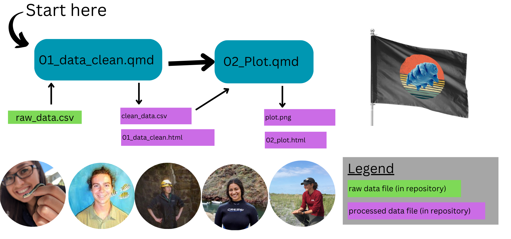

Written Plan for Computational Analysis
Team Mo’ Betta: Aspen Ellis, Elsie Carrillo, Frankie Gerraty, Maya McElfish, Niki Sridhar
In this document, we describe our written plan for computational analysis needed to reproduce Figure 4 from Spatz et al., 2023.
Repository Structure
We will have 5 major folders and several subfolders:
data
raw_data.csv : raw data downloaded from zenodo
clean_data.csv : cleaned and filtered dataset, ready for plotting
docs
index.html : main page for our final project
data_description.html : description of data and availability
computational_analysis_plan.html : written description of plan for computational analysis
analysis.html : description and execution of our analysis
reports: quarto scripts and files associated with html files in the docs folder.
01_cleaning.qmd - cleans the raw dataset and outputs the clean dataset
02_plot.qmd - generates the plot replication of Figure 4.
scripts (R scripts associated with the working drafts of this project)
Analysis Outline
